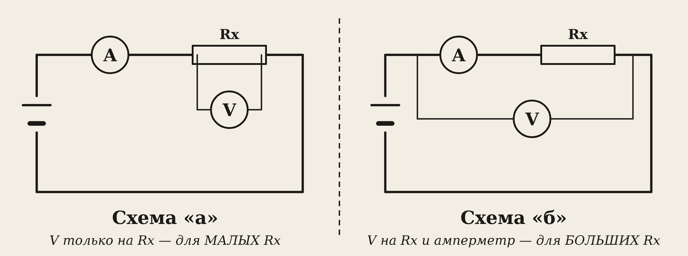
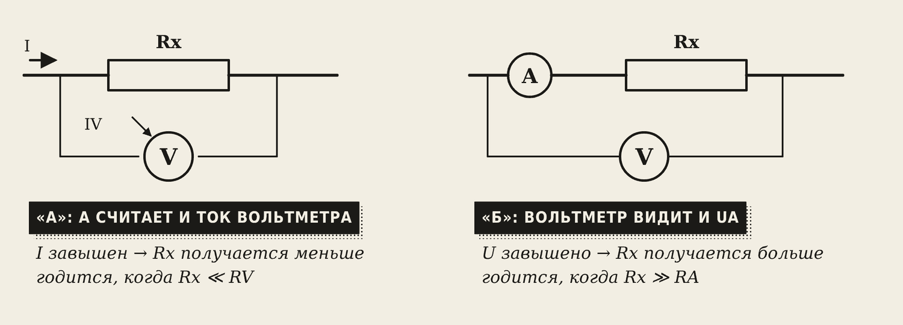
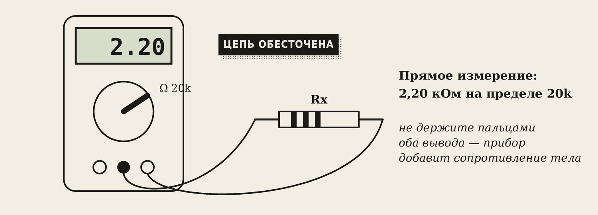
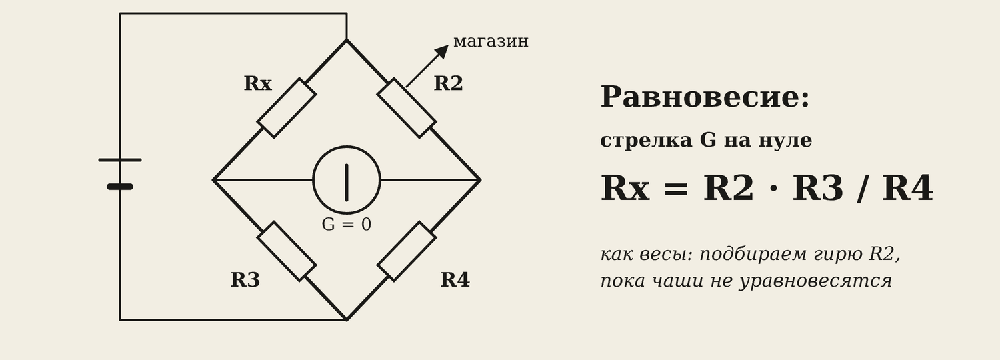

1. Задача
Нужно измерить два сопротивления — малое Rx1 и большое Rx2 — тремя методами и сравнить, какой точнее.
В браузере (вкладка «Сопротивление»): Rx1 = 5 + N Ом, Rx2 = 1200 + 100·N Ом, где N — номер в журнале. Источник 12 В, сопротивление амперметра RA = 0,5 Ом, вольтметра RV = 5 кОм. Вживую — резисторы, которые даст преподаватель.
2. Метод амперметра и вольтметра
Это косвенное измерение: меряем U и I и считаем
Rx = U / I
Но приборы неидеальны: через вольтметр тоже течёт немного тока, а на амперметре тоже падает немного напряжения. Поэтому есть две схемы, и у каждой своя ошибка.

- Схема «а» — вольтметр стоит прямо на Rx. Он видит точное напряжение, но амперметр считает и ток вольтметра. Результат получается меньше настоящего. Ошибка мала, когда Rx намного меньше RV — для малых сопротивлений.
- Схема «б» — вольтметр стоит на Rx вместе с амперметром. Амперметр считает точный ток, но вольтметр видит и падение на амперметре. Результат больше настоящего. Ошибка мала, когда Rx намного больше RA — для больших сопротивлений.

Граница между схемами:
Rгр = √(RA · RV)
RA = 0,5 Ом, RV = 5000 Ом: Rгр = √(0,5 · 5000) = √2500 = 50 Ом. Rx меньше 50 Ом — схема «а». Rx больше 50 Ом — схема «б».
3. Омметр

Омметр (режим Ω мультиметра) меряет сопротивление прямо. Это быстро, но точность средняя — несколько процентов.
- Цепь обязательно обесточена.
- Не держите оба вывода пальцами — прибор добавит сопротивление вашего тела.
- Выбирайте предел чуть больше ожидаемого значения.
4. Мост

Мост — самый точный метод. Четыре резистора соединены ромбом, в середине — чувствительный прибор гальванометр G. Магазином сопротивлений R2 добиваются, чтобы стрелка G встала на ноль (равновесие). Тогда:
Rx = R2 · R3 / R4
Это как старинные весы: подбираем гири R2, пока чаши не уравновесятся.
Порядок: оцените Rx омметром → выберите отношение плеч R3 / R4 (0,01; 0,1; 1; 10) → крупными шагами R2 уберите отклонение G → мелкими доведите до нуля.
R2 = 1500 Ом, R3 / R4 = 0,01 → Rx = 1500 · 0,01 = 15 Ом.
5. Образец расчёта (вариант 10)
Rx1 = 15 Ом, Rx2 = 2200 Ом.
| Схема | U | I | Rx = U / I | Ошибка |
|---|---|---|---|---|
| Rx1 · «а» | 11,61 В | 0,776 А | 14,96 Ом | −0,3 % |
| Rx1 · «б» | 12,00 В | 0,774 А | 15,50 Ом | +3,3 % |
| Rx2 · «а» | 12,00 В | 7,85 мА | 1528 Ом | −30,6 % |
| Rx2 · «б» | 12,00 В | 5,45 мА | 2200 Ом | 0,0 % |
Ошибка = (Rизм − Rист) / Rист · 100 %
Видно главное: для малого Rx1 точна схема «а», для большого Rx2 — схема «б». Неправильная схема для большого сопротивления даёт ошибку 30 %!
6. Выводы — шаблон
- Для малого Rx1 = … Ом точнее схема «…»: ошибка … %, а в другой схеме … %.
- Для большого Rx2 = … Ом точнее схема «…», потому что …
- Омметр показал … и …, мост — … и …
- Самый точный метод — …, самый быстрый — …
Словарик
- Косвенное измерение — величину считают по формуле из показаний приборов.
- Схема «а» — вольтметр прямо на Rx; для малых сопротивлений.
- Схема «б» — вольтметр на Rx вместе с амперметром; для больших сопротивлений.
- Граничное сопротивление — Rгр = √(RA · RV).
- Омметр — прибор для прямого измерения сопротивления.
- Мост — схема из четырёх плеч и гальванометра; самый точный метод.
- Гальванометр — очень чувствительный прибор, показывает ноль при равновесии моста.
- Магазин сопротивлений — набор точных резисторов с переключателями.
Эталоны в тетрадь
Перепишите в тетрадь по билетам — каждый эталон на отдельную страницу, с рисунком и строкой «Мой пример».
Виды измерений и приборов
Прямые и косвенные измерения. Классификация электроизмерительных приборов, обозначения на шкале.
- Прямое измерение — прибор сразу показывает нужную величину (вольтметр — напряжение). Косвенное — считаем по формуле (R = U / I по показаниям вольтметра и амперметра).
- По тому, что меряют: амперметр, вольтметр, омметр, ваттметр, счётчик энергии.
- По виду: стрелочные (аналоговые) и цифровые. По роду тока: постоянного (—), переменного (~).
- На шкале указаны: род тока (— или ~), класс точности (число, например 1,5), положение прибора (вертикально / горизонтально), звёздочка с цифрой — напряжение проверки изоляции.
- Примеры: счётчик в квартире, амперметр на панели сварочного аппарата.
Как включать амперметр и вольтметр
Измерение тока и напряжения: схемы включения, шунт и добавочный резистор, токоизмерительные клещи.
- Амперметр — последовательно, в разрыв цепи: весь ток идёт через него. Его сопротивление очень маленькое. (Схема.)
- Вольтметр — параллельно, к двум точкам. Его сопротивление очень большое. (Схема.)
- Ошибка: амперметр, включённый параллельно, создаёт короткое замыкание и сгорает.
- Шунт — резистор параллельно амперметру, чтобы мерить большой ток. Добавочный резистор — последовательно с вольтметром, чтобы мерить большое напряжение.
- Токоизмерительные клещи меряют ток без разрыва цепи: ими обхватывают один провод. Так проверяют сварочный ток.
Мультиметр и мегаомметр
Мультиметр: режимы и правила работы. Измерение сопротивления, прозвонка, проверка изоляции мегаомметром.
- Мультиметр — несколько приборов в одном: V (напряжение постоянное и переменное), A (ток), Ω (сопротивление), прозвонка (пищит).
- Правила: сначала выбрать режим и предел, потом подключать; держать щупы за изолированную часть; для измерения тока переставить красный щуп в гнездо A.
- Сопротивление и прозвонка — только на обесточенной цепи. Прозвонкой ищут обрыв провода: пищит — целый.
- Мегаомметр проверяет изоляцию повышенным напряжением. Для электропроводки до 1000 В берут мегаомметр на 1000 В, сопротивление изоляции должно быть не меньше 0,5 МОм. Так проверяют и сварочное оборудование.
Проверь себя
Сначала ответьте сами — в тетради или вслух. Потом нажмите на вопрос, чтобы увидеть ответ.
1Почему схема «а» подходит для малых сопротивлений?
Ток через вольтметр очень мал по сравнению с током через малое Rx, поэтому амперметр почти не ошибается.
2RA = 1 Ом, RV = 10 кОм. Найдите границу между схемами.
Rгр = √(1 · 10 000) = 100 Ом.
3Rx = 5 кОм. Какую схему выбрать при границе 50 Ом?
Схему «б»: Rx больше границы.
4Почему омметром нельзя мерить на включённой цепи?
Чужое напряжение исказит показание и может сжечь прибор.
5Мост уравновешен: R2 = 470 Ом, R3 / R4 = 10. Чему равно Rx?
Rx = 470 · 10 = 4700 Ом.
6Какой метод самый точный и почему?
Мост: он сравнивает Rx с точными образцовыми резисторами, а гальванометр показывает только ноль.
Попробуйте в лаборатории
Откройте на телефоне или компьютере — ничего устанавливать не нужно.
Ответы к «Проверь себя»
- Ток через вольтметр очень мал по сравнению с током через малое Rx, поэтому амперметр почти не ошибается.
- Rгр = √(1 · 10 000) = 100 Ом.
- Схему «б»: Rx больше границы.
- Чужое напряжение исказит показание и может сжечь прибор.
- Rx = 470 · 10 = 4700 Ом.
- Мост: он сравнивает Rx с точными образцовыми резисторами, а гальванометр показывает только ноль.